import pandas as pd
from pathlib import Path
from sklearn.metrics import r2_score
from uhina.loading import LoaderFactory, plot_spectra
from uhina.preprocessing import TakeDerivative, SNV
from sklearn.pipeline import Pipeline
from sklearn.decomposition import PCA, KernelPCA
from sklearn.preprocessing import StandardScaler
import warnings
warnings.filterwarnings('ignore')
pd.set_option('display.max_rows', 100)
import plotly
import plotly.express as px
import numpy as np
from astartes import train_val_test_splitRingtrial classic
Canoncical ML pipeline
Loading data
src = Path.home() / 'pro/data/woodwell-ringtrial/drive-download-20231013T123706Z-001'
loader = LoaderFactory.get_loader(src, 'ringtrial')
data = loader.load_data(analytes='potassium_cmolkg')
print(f'X shape: {data.X.shape}')
plot_spectra(data, n_spectra=100, snv=True, alpha=0.2, figsize=(12, 3))X shape: (1400, 1676)(<Figure size 1200x300 with 1 Axes>,
<Axes: xlabel='Wavenumber ($cm^{-1}$)', ylabel='Absorbance'>)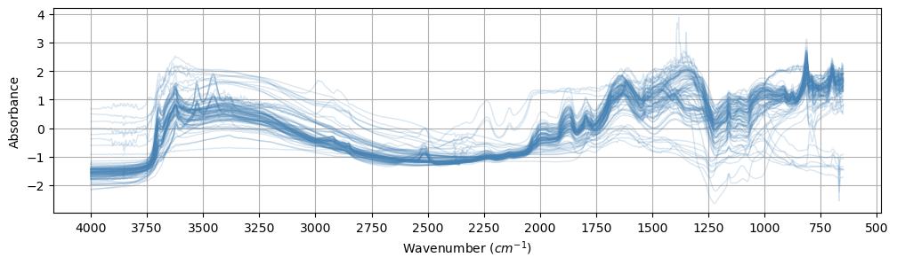
[d for d in dir(data) if '__' not in d]['X',
'X_names',
'dataset_labels',
'dataset_names',
'sample_indices',
'y',
'y_names']print(f'y_names: {data.y_names}')y_names: ['potassium_cmolkg']mask = ~np.isnan(data.y).ravel()data.X = data.X[mask, :]
data.y = data.y[mask]
data.sample_indices = data.sample_indices[mask]np.unique(np.array([idx.split('-rt')[0] for idx in data.sample_indices]))
## EDAarray(['agrocares', 'argonne', 'csu-il', 'eth-alpha-1', 'eth-alpha-2',
'eth-vertex', 'iaea-aug2022', 'kssl', 'landcare', 'lesotho', 'msu',
'osu', 'rothamsted', 'scion', 'ughent', 'uiuc', 'usp',
'uwisc-fine', 'woodwell-alpha', 'woodwell-vertex'], dtype='<U15')data.sample_indicesarray(['agrocares-rt-01', 'agrocares-rt-02', 'agrocares-rt-03', ...,
'woodwell-vertex-rt-68', 'woodwell-vertex-rt-69',
'woodwell-vertex-rt-70'], dtype=object)ds = 'kssl'
mask_ds = np.char.find(data.sample_indices.astype(str), ds) != -1data.X = data.X[mask_ds, :]
data.y = data.y[mask_ds]
data.sample_indices = data.sample_indices[mask_ds]EDA
Visualize in PCA space: - PCA - Robust PCA - Kernel PCA
pipe = Pipeline([
('SNV', SNV()),
('Derivative', TakeDerivative()),
('Scaler', StandardScaler()),
('PCA', PCA(n_components=3))
])
pca = PCA(n_components=3)
data.X_pca = pipe.fit_transform(data.X)
pipe = Pipeline([
# ('SNV', SNV()),
('Derivative', TakeDerivative())
# ('Scaler', StandardScaler())
])
data.X_transformed = pipe.fit_transform(data.X)plot_spectra(data, var='X_transformed', n_spectra=100, snv=True, alpha=0.2, figsize=(12, 3));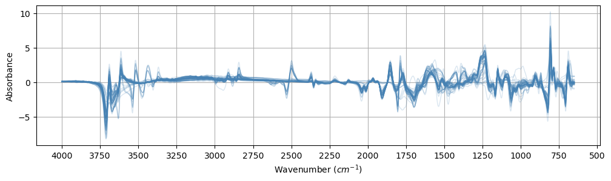
data.y = np.log1p(data.y)def data_to_df(data, x_names=['PC1', 'PC2', 'PC3']):
df_x = pd.DataFrame(data.X_pca, columns=x_names)
# Create a DataFrame from data.y with column names from data.y_names
df_y = pd.DataFrame(data.y, columns=data.y_names)
# Concatenate the two DataFrames
return pd.concat([df_x, df_y], axis=1)data_to_df(data).head()| PC1 | PC2 | PC3 | potassium_cmolkg | |
|---|---|---|---|---|
| 0 | 39.053896 | 5.976212 | -38.723251 | 0.238276 |
| 1 | -6.612691 | 33.863092 | 0.546687 | 0.209848 |
| 2 | 11.784152 | -7.816915 | 31.112676 | 0.255487 |
| 3 | 2.177276 | 9.013502 | -11.529199 | 0.404965 |
| 4 | 2.192674 | 9.798410 | -12.638061 | 0.469860 |
def scatter3d(df, idxs=None, target_name='soil_ex_K2O', dot_size=15, color_by_split=False):
"""Generates a nicely formatted 3D scatter plot of the data
optionally showing train/validation/test splits.
Args:
df (pd.DataFrame): DataFrame containing the data
idxs (tuple of np.array, optional): train, validation, and
test indexes. Defaults to None.
dot_size (int, optional): Base size for dots. Defaults to 15.
color_by_split (bool, optional): If True, color by split instead of soil_ex_K2O. Defaults to False.
"""
df = df.copy()
df['size'] = dot_size
min_val, max_val = df[target_name].min(), df[target_name].max()
plot_args = dict(
data_frame=df,
x="PC1",
y="PC2",
z="PC3",
opacity=1,
height=800,
width=800,
size='size',
size_max=dot_size
)
if idxs:
total_samples = len(df)
size_array = [dot_size] * total_samples
name_array = ['Unsplit'] * total_samples
# Calculate relative sizes based on the number of splits
split_sizes = [len(split) for split in idxs]
max_split_size = max(split_sizes)
relative_sizes = [dot_size * (1 + 2 * (size / max_split_size)) for size in split_sizes]
split_names = ["Training", "Validation", "Testing"][:len(idxs)]
for split, split_size, split_name in zip(idxs, relative_sizes, split_names):
for idx in split:
size_array[idx] = split_size
name_array[idx] = split_name
# pass these through to plotly call
plot_args["symbol"] = "Split"
plot_args["size"] = "MarkerSize"
df["MarkerSize"] = np.array(size_array)
df["Split"] = np.array(name_array)
if color_by_split:
plot_args["color"] = "Split"
plot_args["color_discrete_map"] = {"Training": "#1b9e77", "Validation": "#d95f02", "Testing": "#7570b3", "Unsplit": "gray"}
else:
plot_args["color"] = target_name
plot_args["range_color"] = [min_val, max_val]
else:
plot_args["color"] = target_name
plot_args["range_color"] = [min_val, max_val]
# actual call to plotly
fig = px.scatter_3d(**plot_args)
# add a legend for different split types
if idxs:
fig.update_layout(
legend=dict(orientation="h", yanchor="bottom", y=1.02, xanchor="right", x=1)
)
fig.update_traces(marker=dict(line=dict(width=0)))
# make the markers consistent between plots
symbols = {"Training": "circle", "Validation": "diamond", "Testing": "square", "Unsplit": "circle"}
for i, d in enumerate(fig.data):
if d.name in symbols:
fig.data[i].marker.symbol = symbols[d.name]
# customize the colors
fig.update_layout(
dict(
plot_bgcolor="rgba(0, 0, 0, 0)",
paper_bgcolor="rgba(0, 0, 0, 0)",
)
)
axis_args = dict(
backgroundcolor="rgba(0, 0, 0,0)",
gridcolor="grey",
showbackground=True,
zerolinecolor="grey",
)
fig.update_layout(scene=dict(xaxis=axis_args, yaxis=axis_args, zaxis=axis_args))
# render the plot
fig.show()scatter3d(data_to_df(data), target_name='potassium_cmolkg', dot_size=20)Unable to display output for mime type(s): application/vnd.plotly.v1+jsonTrain/Valid/Test splits
Inspired from: https://jacksonburns.github.io/use-rse-23-astartes/split_comparisons.html
Interpolative
Random split
(
random_X_train,
random_X_val,
random_X_test,
random_y_train,
random_y_val,
random_y_test,
random_idxs_train,
random_idxs_val,
random_idxs_test,
) = train_val_test_split(
data.X_transformed,
data.y,
sampler="random",
train_size=0.5,
val_size=0.25,
test_size=0.25,
return_indices=True,
random_state=40
)scatter3d(
data_to_df(data),
idxs=(random_idxs_train, random_idxs_val, random_idxs_test),
target_name='potassium_cmolkg',
color_by_split=True,
dot_size=20)Unable to display output for mime type(s): application/vnd.plotly.v1+jsonKennard-Stone
(
ks_X_train,
ks_X_val,
ks_X_test,
ks_y_train,
ks_y_val,
ks_y_test,
ks_idxs_train,
ks_idxs_val,
ks_idxs_test,
) = train_val_test_split(
data.X_transformed,
data.y,
sampler="kennard_stone",
train_size=0.5,
val_size=0.25,
test_size=0.25,
return_indices=True,
)scatter3d(
data_to_df(data),
target_name='potassium_cmolkg',
idxs=(ks_idxs_train, ks_idxs_val, ks_idxs_test),
color_by_split=True,
dot_size=20)Unable to display output for mime type(s): application/vnd.plotly.v1+jsonSPXY
data.y.shape(69, 1)data.X_transformed.shape(69, 1676)(
spxy_X_train,
spxy_X_val,
spxy_X_test,
spxy_y_train,
spxy_y_val,
spxy_y_test,
spxy_idxs_train,
spxy_idxs_val,
spxy_idxs_test,
) = train_val_test_split(
data.X_transformed,
data.y.ravel(),
sampler="spxy",
train_size=0.5,
val_size=0.25,
test_size=0.25,
return_indices=True,
)scatter3d(
data_to_df(data),
target_name='potassium_cmolkg',
idxs=(spxy_idxs_train, spxy_idxs_val, spxy_idxs_test),
color_by_split=True,
dot_size=13)Unable to display output for mime type(s): application/vnd.plotly.v1+jsonExtrapolative
KMeans
(
kmeans_X_train,
kmeans_X_val,
kmeans_X_test,
kmeans_y_train,
kmeans_y_val,
kmeans_y_test,
kmeans_clusters_train,
kmeans_clusters_val,
kmeans_clusters_test,
kmeans_idxs_train,
kmeans_idxs_val,
kmeans_idxs_test,
) = train_val_test_split(
data.X_transformed,
data.y[:, 5],
sampler="kmeans",
train_size=0.5,
val_size=0.25,
test_size=0.25,
return_indices=True,
hopts=dict(n_clusters=6),
)scatter3d(
data_to_df(data),
idxs=(kmeans_idxs_train, kmeans_idxs_val, kmeans_idxs_test),
color_by_split=True,
dot_size=13)Unable to display output for mime type(s): application/vnd.plotly.v1+jsonSphere exclusion
(
spex_X_train,
spex_X_val,
spex_X_test,
spex_y_train,
spex_y_val,
spex_y_test,
spex_clusters_train,
spex_clusters_val,
spex_clusters_test,
spex_idxs_train,
spex_idxs_val,
spex_idxs_test,
) = train_val_test_split(
data.X_transformed,
data.y[:, 5],
sampler="sphere_exclusion",
train_size=0.5,
val_size=0.25,
test_size=0.25,
return_indices=True,
hopts=dict(
# normalized between zero and one
distance_cutoff=0.1,
),
)scatter3d(
data_to_df(data),
idxs=(spex_idxs_train, spex_idxs_val, spex_idxs_test),
color_by_split=True,
dot_size=13)Unable to display output for mime type(s): application/vnd.plotly.v1+jsonDBSCAN
# (
# dbscan_X_train,
# dbscan_X_val,
# dbscan_X_test,
# dbscan_y_train,
# dbscan_y_val,
# dbscan_y_test,
# dbscan_clusters_train,
# dbscan_clusters_val,
# dbscan_clusters_test,
# dbscan_idxs_train,
# dbscan_idxs_val,
# dbscan_idxs_test,
# ) = train_val_test_split(
# data.X_transformed,
# data.y[:, 5],
# sampler="dbscan",
# train_size=0.5,
# val_size=0.25,
# test_size=0.25,
# return_indices=True,
# hopts=dict(
# eps=100,
# ),
# )Training
def get_split_data(split_type):
split_names = ['X_train', 'X_val', 'X_test', 'y_train', 'y_val', 'y_test', 'idxs_train', 'idxs_val', 'idxs_test']
return {name: globals().get(f"{split_type}_{name}") for name in split_names}
split_types = ['random', 'ks', 'spxy', 'kmeans', 'spex']
def get_data_for_split(split_type):
if split_type not in split_types:
raise ValueError(f"Invalid split type. Choose from: {', '.join(split_types)}")
split_data = get_split_data(split_type)
return (
split_data['X_train'], split_data['X_val'], split_data['X_test'],
split_data['y_train'], split_data['y_val'], split_data['y_test'],
split_data['idxs_train'], split_data['idxs_val'], split_data['idxs_test']
)split_type = 'ks' # or any other split type
(
X_train,
X_val,
X_test,
y_train,
y_val,
y_test,
idxs_train,
idxs_val,
idxs_test
) = get_data_for_split(split_type)from sklearn.cross_decomposition import PLSRegression
from tqdm.auto import tqdm
scores = []
n_max = 30
for n in tqdm(range(1,n_max)):
pls = PLSRegression(n_components=n)
pls.fit(X_train, y_train)
y_val_predicted = pls.predict(X_val)
scores.append(r2_score(y_val, y_val_predicted))
from matplotlib import pyplot as plt
plt.plot(range(1, n_max), scores)
n_best = np.argmax(np.array(scores)) + 1
print(f'Best score: {scores[n_best]} at n={n_best}')
# plt.ylim(0, 1)100%|██████████| 29/29 [00:00<00:00, 99.32it/s] Best score: 0.45715906114471405 at n=2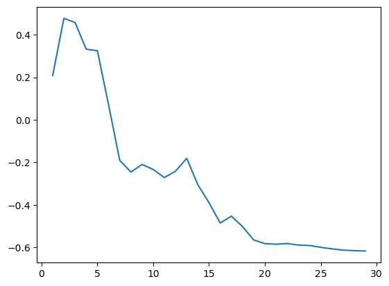
# ON TEST SET
pls = PLSRegression(n_components=n_best)
pls.fit(X_train, y_train)
y_test_predicted = pls.predict(X_test)
r2_score(y_test, y_test_predicted)0.6783592767273139src = '../../_data/fk-jumpei-tfm/im-targets-lut.csv'
df = pd.read_csv(src)
print(f'{df.shape[0]} samples')
df.head()635 samples| fname | soil_total_Cs134 | soil_total_Cs137 | soil_ex_Cs137 | exCs137_totalCs137 | soil_water_soluble_K2O | soil_ex_K2O | TF_plant_totalCs137 | TF_plant_exCs137 | soil_pH | ... | soil_CN_ratio | soil_CEC | soil_MgO | soil_CaO | soil_P_absorption_coefficient | avaiable_Pi | course_sand | fine_sand | silt | clay | |
|---|---|---|---|---|---|---|---|---|---|---|---|---|---|---|---|---|---|---|---|---|---|
| 0 | 20-2013-paddy_rice.png | NaN | 610.0 | 70.6 | 0.116 | NaN | 17.6 | NaN | NaN | 6.0 | ... | 12.0 | 29.5 | 64.1 | 339.0 | 1700.0 | NaN | 17.1 | 34.1 | 25.6 | 23.2 |
| 1 | 28-2014-paddy_rice.png | NaN | 273.5 | 27.8 | 0.102 | NaN | 62.1 | NaN | NaN | 5.0 | ... | 12.0 | 19.6 | 30.3 | 217.0 | 660.0 | 12.2 | NaN | NaN | NaN | NaN |
| 2 | 33-2014-paddy_rice.png | NaN | 28.1 | 3.6 | 0.127 | NaN | 22.3 | NaN | NaN | 6.0 | ... | 12.0 | 13.8 | 38.1 | 96.1 | 640.0 | 6.8 | NaN | NaN | NaN | NaN |
| 3 | 35-2014-paddy_rice.png | NaN | 897.8 | 71.4 | 0.080 | NaN | 33.6 | NaN | NaN | 5.0 | ... | 12.0 | 15.4 | 16.2 | 119.0 | 640.0 | 34.2 | NaN | NaN | NaN | NaN |
| 4 | 36-2014-paddy_rice.png | NaN | 964.3 | 90.6 | 0.094 | NaN | 57.0 | NaN | NaN | 5.0 | ... | 12.0 | 17.7 | 19.9 | 151.0 | 610.0 | 40.0 | NaN | NaN | NaN | NaN |
5 rows × 22 columns
def mg_100g_to_cmol_kg(x, log_tfm=False, atom_weight=39.1):
x_mg_kg = x * 10
x_mg_kg_K = 0.83 * x_mg_kg
x_cmol_kg_K = x_mg_kg_K / (atom_weight*10)
return np.log1p(x_cmol_kg_K) if log_tfm else x_cmol_kg_Kmg_100g_to_cmol_kg(df['soil_ex_K2O'], log_tfm=True).hist()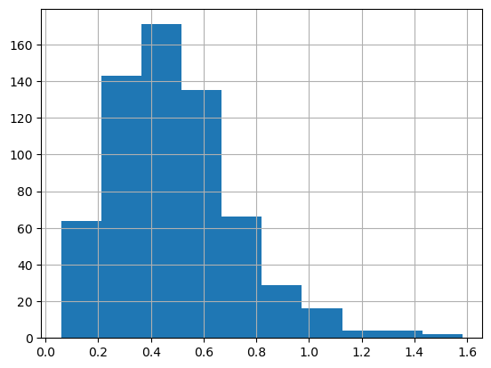
print('Before:', df.shape)
df.dropna(inplace=True, subset=['soil_ex_K2O'])
print('After:', df.shape)Before: (635, 22)
After: (634, 22)df['soil_ex_K2O'] = df['soil_ex_K2O'].apply(lambda x: mg_100g_to_cmol_kg(x, log_tfm=True))
df.soil_ex_K2O.hist()
for i, col in enumerate(df.columns):
print(f'{i}: {col}')0: fname
1: soil_total_Cs134
2: soil_total_Cs137
3: soil_ex_Cs137
4: exCs137_totalCs137
5: soil_water_soluble_K2O
6: soil_ex_K2O
7: TF_plant_totalCs137
8: TF_plant_exCs137
9: soil_pH
10: soil_C
11: soil_N
12: soil_CN_ratio
13: soil_CEC
14: soil_MgO
15: soil_CaO
16: soil_P_absorption_coefficient
17: avaiable_Pi
18: course_sand
19: fine_sand
20: silt
21: clayFine-tuning
class OrderedQuantize(Quantize):
order = 0 # Apply first
class OrderedRatioResize(RatioResize):
order = 1 # Apply seconddef stratified_split(df, target, valid_size=0.2, test_size=0.2, num_bins=2, seed=41):
from sklearn.model_selection import train_test_split
df = df.copy()
df.reset_index(inplace=True, drop=True)
train_df, test_df = train_test_split(df, test_size=test_size,
stratify=pd.qcut(df[target], q=num_bins, labels=False),
random_state=seed)
train_df, valid_df = train_test_split(train_df, test_size=valid_size,
stratify=pd.qcut(train_df[target], q=num_bins, labels=False),
random_state=seed)
return train_df, train_df.index, valid_df, valid_df.index, test_df, test_df.index# from sklearn.model_selection import StratifiedShuffleSplit
# def stratified_split(df, target_col, n_bins=2, n_splits=2, test_size=0.2, random_state=42):
# # Create bins for the target values
# df_copy = df.copy()
# df_copy['target_bin'] = pd.cut(df_copy[target_col], bins=n_bins, labels=False)
# # Create a StratifiedShuffleSplit object
# sss = StratifiedShuffleSplit(n_splits=n_splits, test_size=test_size, random_state=random_state)
# # Get the indices for the splits
# splits = list(sss.split(df_copy, df_copy['target_bin']))
# # Remove the temporary 'target_bin' column
# df_copy.drop('target_bin', axis=1, inplace=True)
# return splitsdf.head()| fname | soil_total_Cs134 | soil_total_Cs137 | soil_ex_Cs137 | exCs137_totalCs137 | soil_water_soluble_K2O | soil_ex_K2O | TF_plant_totalCs137 | TF_plant_exCs137 | soil_pH | ... | soil_CN_ratio | soil_CEC | soil_MgO | soil_CaO | soil_P_absorption_coefficient | avaiable_Pi | course_sand | fine_sand | silt | clay | |
|---|---|---|---|---|---|---|---|---|---|---|---|---|---|---|---|---|---|---|---|---|---|
| 0 | 20-2013-paddy_rice.png | NaN | 610.0 | 70.6 | 0.116 | NaN | 0.317439 | NaN | NaN | 6.0 | ... | 12.0 | 29.5 | 64.1 | 339.0 | 1700.0 | NaN | 17.1 | 34.1 | 25.6 | 23.2 |
| 1 | 28-2014-paddy_rice.png | NaN | 273.5 | 27.8 | 0.102 | NaN | 0.840806 | NaN | NaN | 5.0 | ... | 12.0 | 19.6 | 30.3 | 217.0 | 660.0 | 12.2 | NaN | NaN | NaN | NaN |
| 2 | 33-2014-paddy_rice.png | NaN | 28.1 | 3.6 | 0.127 | NaN | 0.387556 | NaN | NaN | 6.0 | ... | 12.0 | 13.8 | 38.1 | 96.1 | 640.0 | 6.8 | NaN | NaN | NaN | NaN |
| 3 | 35-2014-paddy_rice.png | NaN | 897.8 | 71.4 | 0.080 | NaN | 0.538391 | NaN | NaN | 5.0 | ... | 12.0 | 15.4 | 16.2 | 119.0 | 640.0 | 34.2 | NaN | NaN | NaN | NaN |
| 4 | 36-2014-paddy_rice.png | NaN | 964.3 | 90.6 | 0.094 | NaN | 0.792981 | NaN | NaN | 5.0 | ... | 12.0 | 17.7 | 19.9 | 151.0 | 610.0 | 40.0 | NaN | NaN | NaN | NaN |
5 rows × 22 columns
idx = 6
df.columns[idx]'soil_ex_K2O'data = stratified_split(df, df.columns[idx], valid_size=0.2, test_size=0.2, num_bins=2)
train_df, train_idx, valid_df, valid_idx, test_df, test_idx = data# # Usage example:
# splits = stratified_split(df, df.columns[idx], n_bins=4, n_splits=2, random_state=41)
# # For train-validation split
# train_idx, valid_idx = splits[0]
# # For train-test split (if needed)
# train_valid_idx, test_idx = splits[1]
# # Create DataFrames
# train_df = df.iloc[train_idx]
# valid_df = df.iloc[valid_idx]
# test_df = df.iloc[test_idx]len(train_df), len(valid_df), len(test_df)(405, 102, 127)test_df[['fname', df.columns[idx]]]| fname | soil_ex_K2O | |
|---|---|---|
| 195 | 758-2014-soybean.png | 0.973526 |
| 77 | 166-2016-paddy_rice.png | 0.571297 |
| 224 | 888-2014-paddy_rice.png | 0.329727 |
| 580 | 2391-2020-paddy_rice.png | 0.519631 |
| 10 | 51-2015-paddy_rice.png | 0.204683 |
| ... | ... | ... |
| 520 | 2131-2018-paddy_rice.png | 0.473116 |
| 321 | 1352-2014-paddy_rice.png | 0.739718 |
| 226 | 908-2014-paddy_rice.png | 0.202951 |
| 137 | 250-2017-paddy_rice.png | 0.095101 |
| 378 | 1988-2018-paddy_rice.png | 0.089294 |
127 rows × 2 columns
train_df['soil_ex_K2O'].hist()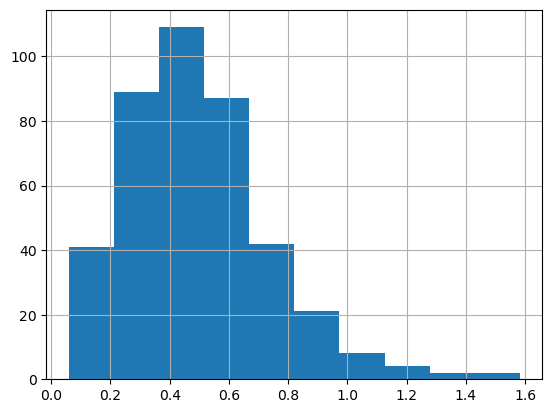
valid_df['soil_ex_K2O'].hist()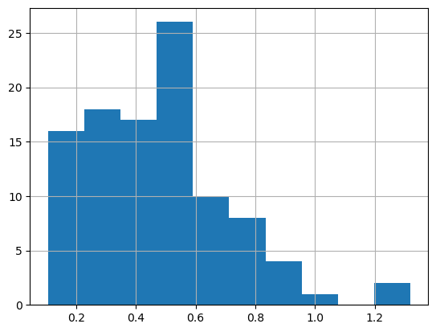
test_df['soil_ex_K2O'].hist()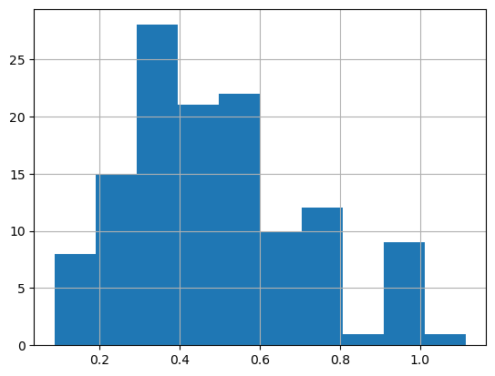
def stratified_splitter(items):
return [train_idx, valid_idx]len(train_idx), len(valid_idx), len(test_idx)(405, 102, 127)dblock = DataBlock(
blocks=(ImageBlock, RegressionBlock),
get_x=ColReader(0, pref='../../_data/fk-jumpei-tfm/im/'),
get_y=ColReader(6),
splitter=stratified_splitter,
item_tfms=[OrderedQuantize(n_valid=len(valid_idx))],
batch_tfms=[
OrderedRatioResize(224),
Normalize.from_stats(*imagenet_stats)
]
)# dblock = DataBlock(blocks=(ImageBlock, RegressionBlock),
# get_x=ColReader(0, pref='../../_data/fk-jumpei-tfm/im/'),
# get_y=ColReader(idx),
# splitter=stratified_splitter,
# batch_tfms=[RatioResize(224)],
# item_tfms=[Quantize(n_valid=len(valid_idx))])
# # dblock.summary(df)dls = dblock.dataloaders(df, bs=16)dls.train.n, dls.valid.n(405, 102)dls.show_batch(nrows=6, ncols=2, figsize=(12, 13))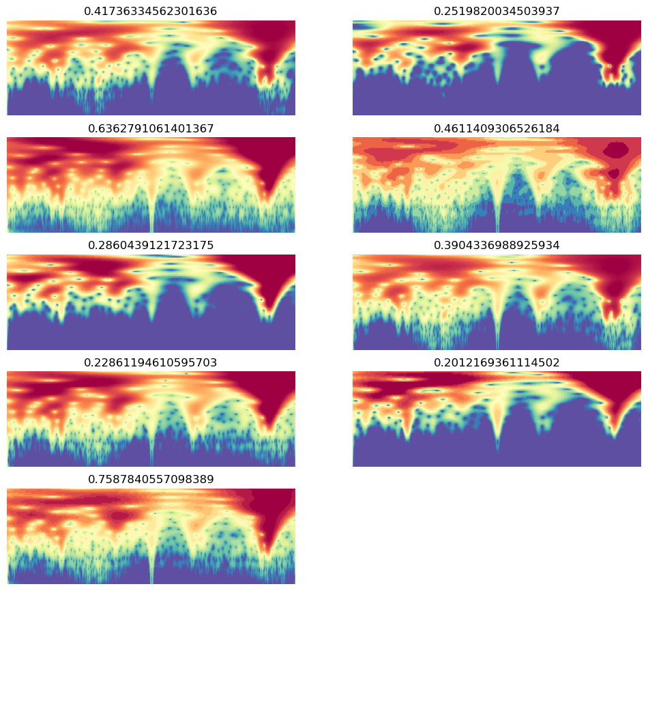
# learn = load_learner('./models/650-4000-epoch-25-lr-3e-3.pkl', cpu=True)
learn = load_learner('./models/unfrozen-epoch-30-lr-1.5e-3-12102024.pkl', cpu=True)
# learn = load_learner('./models/frozen-epoch-30-lr-1.5e-3-12102024.pkl', cpu=True)learn.dls = dls# learn.summary()learn.freeze()# learn.model[-1][-1]# model = learn.model
# last_layer = model[-1][-1]
# new_layer = nn.Linear(in_features=last_layer.in_features,
# out_features=last_layer.out_features,
# bias=True)
# new_layer.weight.data = last_layer.weight.data
# if hasattr(last_layer, 'bias') and last_layer.bias is not None:
# new_layer.bias.data = last_layer.bias.data
# learn.model[-1][-1] = new_layer# learn.model[-1][-1]learn.lr_find()SuggestedLRs(valley=0.0003981071640737355)
learn.fit_one_cycle(20, 4e-4)
30.00% [6/20 02:14<05:14]
| epoch | train_loss | valid_loss | r2_score | time |
|---|---|---|---|---|
| 0 | 0.085307 | 0.063526 | -0.155087 | 00:21 |
| 1 | 0.073202 | 0.090788 | -0.650800 | 00:21 |
| 2 | 0.064845 | 0.056194 | -0.021780 | 00:22 |
| 3 | 0.058440 | 0.168733 | -2.068068 | 00:22 |
| 4 | 0.057954 | 0.169698 | -2.085604 | 00:22 |
| 5 | 0.058297 | 0.072166 | -0.312190 | 00:24 |
0.00% [0/7 00:00<?]
--------------------------------------------------------------------------- KeyboardInterrupt Traceback (most recent call last) Cell In[287], line 1 ----> 1 learn.fit_one_cycle(20, 4e-4) File ~/mambaforge/envs/uhina/lib/python3.12/site-packages/fastai/callback/schedule.py:121, in fit_one_cycle(self, n_epoch, lr_max, div, div_final, pct_start, wd, moms, cbs, reset_opt, start_epoch) 118 lr_max = np.array([h['lr'] for h in self.opt.hypers]) 119 scheds = {'lr': combined_cos(pct_start, lr_max/div, lr_max, lr_max/div_final), 120 'mom': combined_cos(pct_start, *(self.moms if moms is None else moms))} --> 121 self.fit(n_epoch, cbs=ParamScheduler(scheds)+L(cbs), reset_opt=reset_opt, wd=wd, start_epoch=start_epoch) File ~/mambaforge/envs/uhina/lib/python3.12/site-packages/fastai/learner.py:266, in Learner.fit(self, n_epoch, lr, wd, cbs, reset_opt, start_epoch) 264 self.opt.set_hypers(lr=self.lr if lr is None else lr) 265 self.n_epoch = n_epoch --> 266 self._with_events(self._do_fit, 'fit', CancelFitException, self._end_cleanup) File ~/mambaforge/envs/uhina/lib/python3.12/site-packages/fastai/learner.py:201, in Learner._with_events(self, f, event_type, ex, final) 200 def _with_events(self, f, event_type, ex, final=noop): --> 201 try: self(f'before_{event_type}'); f() 202 except ex: self(f'after_cancel_{event_type}') 203 self(f'after_{event_type}'); final() File ~/mambaforge/envs/uhina/lib/python3.12/site-packages/fastai/learner.py:255, in Learner._do_fit(self) 253 for epoch in range(self.n_epoch): 254 self.epoch=epoch --> 255 self._with_events(self._do_epoch, 'epoch', CancelEpochException) File ~/mambaforge/envs/uhina/lib/python3.12/site-packages/fastai/learner.py:201, in Learner._with_events(self, f, event_type, ex, final) 200 def _with_events(self, f, event_type, ex, final=noop): --> 201 try: self(f'before_{event_type}'); f() 202 except ex: self(f'after_cancel_{event_type}') 203 self(f'after_{event_type}'); final() File ~/mambaforge/envs/uhina/lib/python3.12/site-packages/fastai/learner.py:250, in Learner._do_epoch(self) 248 def _do_epoch(self): 249 self._do_epoch_train() --> 250 self._do_epoch_validate() File ~/mambaforge/envs/uhina/lib/python3.12/site-packages/fastai/learner.py:246, in Learner._do_epoch_validate(self, ds_idx, dl) 244 if dl is None: dl = self.dls[ds_idx] 245 self.dl = dl --> 246 with torch.no_grad(): self._with_events(self.all_batches, 'validate', CancelValidException) File ~/mambaforge/envs/uhina/lib/python3.12/site-packages/fastai/learner.py:201, in Learner._with_events(self, f, event_type, ex, final) 200 def _with_events(self, f, event_type, ex, final=noop): --> 201 try: self(f'before_{event_type}'); f() 202 except ex: self(f'after_cancel_{event_type}') 203 self(f'after_{event_type}'); final() File ~/mambaforge/envs/uhina/lib/python3.12/site-packages/fastai/learner.py:207, in Learner.all_batches(self) 205 def all_batches(self): 206 self.n_iter = len(self.dl) --> 207 for o in enumerate(self.dl): self.one_batch(*o) File ~/mambaforge/envs/uhina/lib/python3.12/site-packages/fastai/data/load.py:129, in DataLoader.__iter__(self) 127 self.before_iter() 128 self.__idxs=self.get_idxs() # called in context of main process (not workers/subprocesses) --> 129 for b in _loaders[self.fake_l.num_workers==0](self.fake_l): 130 # pin_memory causes tuples to be converted to lists, so convert them back to tuples 131 if self.pin_memory and type(b) == list: b = tuple(b) 132 if self.device is not None: b = to_device(b, self.device) File ~/mambaforge/envs/uhina/lib/python3.12/site-packages/torch/utils/data/dataloader.py:630, in _BaseDataLoaderIter.__next__(self) 627 if self._sampler_iter is None: 628 # TODO(https://github.com/pytorch/pytorch/issues/76750) 629 self._reset() # type: ignore[call-arg] --> 630 data = self._next_data() 631 self._num_yielded += 1 632 if self._dataset_kind == _DatasetKind.Iterable and \ 633 self._IterableDataset_len_called is not None and \ 634 self._num_yielded > self._IterableDataset_len_called: File ~/mambaforge/envs/uhina/lib/python3.12/site-packages/torch/utils/data/dataloader.py:673, in _SingleProcessDataLoaderIter._next_data(self) 671 def _next_data(self): 672 index = self._next_index() # may raise StopIteration --> 673 data = self._dataset_fetcher.fetch(index) # may raise StopIteration 674 if self._pin_memory: 675 data = _utils.pin_memory.pin_memory(data, self._pin_memory_device) File ~/mambaforge/envs/uhina/lib/python3.12/site-packages/torch/utils/data/_utils/fetch.py:42, in _IterableDatasetFetcher.fetch(self, possibly_batched_index) 40 raise StopIteration 41 else: ---> 42 data = next(self.dataset_iter) 43 return self.collate_fn(data) File ~/mambaforge/envs/uhina/lib/python3.12/site-packages/fastai/data/load.py:140, in DataLoader.create_batches(self, samps) 138 if self.dataset is not None: self.it = iter(self.dataset) 139 res = filter(lambda o:o is not None, map(self.do_item, samps)) --> 140 yield from map(self.do_batch, self.chunkify(res)) File ~/mambaforge/envs/uhina/lib/python3.12/site-packages/fastcore/basics.py:245, in chunked(it, chunk_sz, drop_last, n_chunks) 243 if not isinstance(it, Iterator): it = iter(it) 244 while True: --> 245 res = list(itertools.islice(it, chunk_sz)) 246 if res and (len(res)==chunk_sz or not drop_last): yield res 247 if len(res)<chunk_sz: return File ~/mambaforge/envs/uhina/lib/python3.12/site-packages/fastai/data/load.py:170, in DataLoader.do_item(self, s) 169 def do_item(self, s): --> 170 try: return self.after_item(self.create_item(s)) 171 except SkipItemException: return None File ~/mambaforge/envs/uhina/lib/python3.12/site-packages/fastcore/transform.py:210, in Pipeline.__call__(self, o) --> 210 def __call__(self, o): return compose_tfms(o, tfms=self.fs, split_idx=self.split_idx) File ~/mambaforge/envs/uhina/lib/python3.12/site-packages/fastcore/transform.py:160, in compose_tfms(x, tfms, is_enc, reverse, **kwargs) 158 for f in tfms: 159 if not is_enc: f = f.decode --> 160 x = f(x, **kwargs) 161 return x File ~/mambaforge/envs/uhina/lib/python3.12/site-packages/fastai/vision/augment.py:51, in RandTransform.__call__(self, b, split_idx, **kwargs) 45 def __call__(self, 46 b, 47 split_idx:int=None, # Index of the train/valid dataset 48 **kwargs 49 ): 50 self.before_call(b, split_idx=split_idx) ---> 51 return super().__call__(b, split_idx=split_idx, **kwargs) if self.do else b File ~/mambaforge/envs/uhina/lib/python3.12/site-packages/fastcore/transform.py:83, in Transform.__call__(self, x, **kwargs) ---> 83 def __call__(self, x, **kwargs): return self._call('encodes', x, **kwargs) File ~/mambaforge/envs/uhina/lib/python3.12/site-packages/fastcore/transform.py:93, in Transform._call(self, fn, x, split_idx, **kwargs) 91 def _call(self, fn, x, split_idx=None, **kwargs): 92 if split_idx!=self.split_idx and self.split_idx is not None: return x ---> 93 return self._do_call(getattr(self, fn), x, **kwargs) File ~/mambaforge/envs/uhina/lib/python3.12/site-packages/fastcore/transform.py:100, in Transform._do_call(self, f, x, **kwargs) 98 ret = f.returns(x) if hasattr(f,'returns') else None 99 return retain_type(f(x, **kwargs), x, ret) --> 100 res = tuple(self._do_call(f, x_, **kwargs) for x_ in x) 101 return retain_type(res, x) File ~/mambaforge/envs/uhina/lib/python3.12/site-packages/fastcore/transform.py:100, in <genexpr>(.0) 98 ret = f.returns(x) if hasattr(f,'returns') else None 99 return retain_type(f(x, **kwargs), x, ret) --> 100 res = tuple(self._do_call(f, x_, **kwargs) for x_ in x) 101 return retain_type(res, x) File ~/mambaforge/envs/uhina/lib/python3.12/site-packages/fastcore/transform.py:99, in Transform._do_call(self, f, x, **kwargs) 97 if f is None: return x 98 ret = f.returns(x) if hasattr(f,'returns') else None ---> 99 return retain_type(f(x, **kwargs), x, ret) 100 res = tuple(self._do_call(f, x_, **kwargs) for x_ in x) 101 return retain_type(res, x) File ~/mambaforge/envs/uhina/lib/python3.12/site-packages/fastcore/dispatch.py:122, in TypeDispatch.__call__(self, *args, **kwargs) 120 elif self.inst is not None: f = MethodType(f, self.inst) 121 elif self.owner is not None: f = MethodType(f, self.owner) --> 122 return f(*args, **kwargs) File ~/pro/dev/uhina/uhina/augment.py:50, in Quantize.encodes(self, x) 48 im_tensor = image2tensor(x)[0, :, :] 49 percentiles = self.get_percentiles() ---> 50 levels = torch.quantile(im_tensor.float(), percentiles / 100) 51 im_quant = torch.bucketize(im_tensor.float(), levels) 53 cmap = plt.get_cmap('Spectral_r') KeyboardInterrupt:
val_preds, val_targets = learn.get_preds(dl=dls.valid)
r2_score(val_targets, val_preds)0.23469541349548861learn.unfreeze()learn.lr_find()SuggestedLRs(valley=5.248074739938602e-05)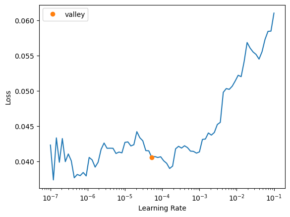
# learn.fit_one_cycle(20, slice(1e-5, 1.5e-3))
learn.fit_one_cycle(20, 1.5e-3)
15.00% [3/20 01:05<06:11]
| epoch | train_loss | valid_loss | r2_score | time |
|---|---|---|---|---|
| 0 | 0.043800 | 0.053276 | 0.031285 | 00:22 |
| 1 | 0.046924 | 0.054486 | 0.009281 | 00:21 |
| 2 | 0.051729 | 0.184493 | -2.354623 | 00:21 |
16.00% [4/25 00:03<00:16 0.0514]
--------------------------------------------------------------------------- KeyboardInterrupt Traceback (most recent call last) Cell In[183], line 2 1 # learn.fit_one_cycle(20, slice(1e-5, 1.5e-3)) ----> 2 learn.fit_one_cycle(20, 1.5e-3) File ~/mambaforge/envs/uhina/lib/python3.12/site-packages/fastai/callback/schedule.py:121, in fit_one_cycle(self, n_epoch, lr_max, div, div_final, pct_start, wd, moms, cbs, reset_opt, start_epoch) 118 lr_max = np.array([h['lr'] for h in self.opt.hypers]) 119 scheds = {'lr': combined_cos(pct_start, lr_max/div, lr_max, lr_max/div_final), 120 'mom': combined_cos(pct_start, *(self.moms if moms is None else moms))} --> 121 self.fit(n_epoch, cbs=ParamScheduler(scheds)+L(cbs), reset_opt=reset_opt, wd=wd, start_epoch=start_epoch) File ~/mambaforge/envs/uhina/lib/python3.12/site-packages/fastai/learner.py:266, in Learner.fit(self, n_epoch, lr, wd, cbs, reset_opt, start_epoch) 264 self.opt.set_hypers(lr=self.lr if lr is None else lr) 265 self.n_epoch = n_epoch --> 266 self._with_events(self._do_fit, 'fit', CancelFitException, self._end_cleanup) File ~/mambaforge/envs/uhina/lib/python3.12/site-packages/fastai/learner.py:201, in Learner._with_events(self, f, event_type, ex, final) 200 def _with_events(self, f, event_type, ex, final=noop): --> 201 try: self(f'before_{event_type}'); f() 202 except ex: self(f'after_cancel_{event_type}') 203 self(f'after_{event_type}'); final() File ~/mambaforge/envs/uhina/lib/python3.12/site-packages/fastai/learner.py:255, in Learner._do_fit(self) 253 for epoch in range(self.n_epoch): 254 self.epoch=epoch --> 255 self._with_events(self._do_epoch, 'epoch', CancelEpochException) File ~/mambaforge/envs/uhina/lib/python3.12/site-packages/fastai/learner.py:201, in Learner._with_events(self, f, event_type, ex, final) 200 def _with_events(self, f, event_type, ex, final=noop): --> 201 try: self(f'before_{event_type}'); f() 202 except ex: self(f'after_cancel_{event_type}') 203 self(f'after_{event_type}'); final() File ~/mambaforge/envs/uhina/lib/python3.12/site-packages/fastai/learner.py:249, in Learner._do_epoch(self) 248 def _do_epoch(self): --> 249 self._do_epoch_train() 250 self._do_epoch_validate() File ~/mambaforge/envs/uhina/lib/python3.12/site-packages/fastai/learner.py:241, in Learner._do_epoch_train(self) 239 def _do_epoch_train(self): 240 self.dl = self.dls.train --> 241 self._with_events(self.all_batches, 'train', CancelTrainException) File ~/mambaforge/envs/uhina/lib/python3.12/site-packages/fastai/learner.py:201, in Learner._with_events(self, f, event_type, ex, final) 200 def _with_events(self, f, event_type, ex, final=noop): --> 201 try: self(f'before_{event_type}'); f() 202 except ex: self(f'after_cancel_{event_type}') 203 self(f'after_{event_type}'); final() File ~/mambaforge/envs/uhina/lib/python3.12/site-packages/fastai/learner.py:207, in Learner.all_batches(self) 205 def all_batches(self): 206 self.n_iter = len(self.dl) --> 207 for o in enumerate(self.dl): self.one_batch(*o) File ~/mambaforge/envs/uhina/lib/python3.12/site-packages/fastai/learner.py:237, in Learner.one_batch(self, i, b) 235 b = self._set_device(b) 236 self._split(b) --> 237 self._with_events(self._do_one_batch, 'batch', CancelBatchException) File ~/mambaforge/envs/uhina/lib/python3.12/site-packages/fastai/learner.py:203, in Learner._with_events(self, f, event_type, ex, final) 201 try: self(f'before_{event_type}'); f() 202 except ex: self(f'after_cancel_{event_type}') --> 203 self(f'after_{event_type}'); final() File ~/mambaforge/envs/uhina/lib/python3.12/site-packages/fastai/learner.py:174, in Learner.__call__(self, event_name) --> 174 def __call__(self, event_name): L(event_name).map(self._call_one) File ~/mambaforge/envs/uhina/lib/python3.12/site-packages/fastcore/foundation.py:159, in L.map(self, f, *args, **kwargs) --> 159 def map(self, f, *args, **kwargs): return self._new(map_ex(self, f, *args, gen=False, **kwargs)) File ~/mambaforge/envs/uhina/lib/python3.12/site-packages/fastcore/basics.py:899, in map_ex(iterable, f, gen, *args, **kwargs) 897 res = map(g, iterable) 898 if gen: return res --> 899 return list(res) File ~/mambaforge/envs/uhina/lib/python3.12/site-packages/fastcore/basics.py:884, in bind.__call__(self, *args, **kwargs) 882 if isinstance(v,_Arg): kwargs[k] = args.pop(v.i) 883 fargs = [args[x.i] if isinstance(x, _Arg) else x for x in self.pargs] + args[self.maxi+1:] --> 884 return self.func(*fargs, **kwargs) File ~/mambaforge/envs/uhina/lib/python3.12/site-packages/fastai/learner.py:178, in Learner._call_one(self, event_name) 176 def _call_one(self, event_name): 177 if not hasattr(event, event_name): raise Exception(f'missing {event_name}') --> 178 for cb in self.cbs.sorted('order'): cb(event_name) File ~/mambaforge/envs/uhina/lib/python3.12/site-packages/fastai/callback/core.py:62, in Callback.__call__(self, event_name) 60 res = None 61 if self.run and _run: ---> 62 try: res = getcallable(self, event_name)() 63 except (CancelBatchException, CancelBackwardException, CancelEpochException, CancelFitException, CancelStepException, CancelTrainException, CancelValidException): raise 64 except Exception as e: raise modify_exception(e, f'Exception occured in `{self.__class__.__name__}` when calling event `{event_name}`:\n\t{e.args[0]}', replace=True) File ~/mambaforge/envs/uhina/lib/python3.12/site-packages/fastai/learner.py:562, in Recorder.after_batch(self) 560 if len(self.yb) == 0: return 561 mets = self._train_mets if self.training else self._valid_mets --> 562 for met in mets: met.accumulate(self.learn) 563 if not self.training: return 564 self.lrs.append(self.opt.hypers[-1]['lr']) File ~/mambaforge/envs/uhina/lib/python3.12/site-packages/fastai/learner.py:511, in AvgSmoothLoss.accumulate(self, learn) 509 def accumulate(self, learn): 510 self.count += 1 --> 511 self.val = torch.lerp(to_detach(learn.loss.mean()), self.val, self.beta) File ~/mambaforge/envs/uhina/lib/python3.12/site-packages/fastai/torch_core.py:246, in to_detach(b, cpu, gather) 244 if gather: x = maybe_gather(x) 245 return x.cpu() if cpu else x --> 246 return apply(_inner, b, cpu=cpu, gather=gather) File ~/mambaforge/envs/uhina/lib/python3.12/site-packages/fastai/torch_core.py:226, in apply(func, x, *args, **kwargs) 224 if is_listy(x): return type(x)([apply(func, o, *args, **kwargs) for o in x]) 225 if isinstance(x,(dict,MutableMapping)): return {k: apply(func, v, *args, **kwargs) for k,v in x.items()} --> 226 res = func(x, *args, **kwargs) 227 return res if x is None else retain_type(res, x) File ~/mambaforge/envs/uhina/lib/python3.12/site-packages/fastai/torch_core.py:245, in to_detach.<locals>._inner(x, cpu, gather) 243 x = x.detach() 244 if gather: x = maybe_gather(x) --> 245 return x.cpu() if cpu else x File ~/mambaforge/envs/uhina/lib/python3.12/site-packages/fastai/torch_core.py:384, in TensorBase.__torch_function__(cls, func, types, args, kwargs) 382 if cls.debug and func.__name__ not in ('__str__','__repr__'): print(func, types, args, kwargs) 383 if _torch_handled(args, cls._opt, func): types = (torch.Tensor,) --> 384 res = super().__torch_function__(func, types, args, ifnone(kwargs, {})) 385 dict_objs = _find_args(args) if args else _find_args(list(kwargs.values())) 386 if issubclass(type(res),TensorBase) and dict_objs: res.set_meta(dict_objs[0],as_copy=True) File ~/mambaforge/envs/uhina/lib/python3.12/site-packages/torch/_tensor.py:1437, in Tensor.__torch_function__(cls, func, types, args, kwargs) 1434 return NotImplemented 1436 with _C.DisableTorchFunctionSubclass(): -> 1437 ret = func(*args, **kwargs) 1438 if func in get_default_nowrap_functions(): 1439 return ret KeyboardInterrupt:
val_preds, val_targets = learn.get_preds(dl=dls.valid)
r2_score(val_targets, val_preds)0.36861295616974843Evaluate fine-tuned model
len(test_df)127dblock = DataBlock(blocks=(ImageBlock, RegressionBlock),
get_x=ColReader(0, pref='../../_data/fk-jumpei-tfm/im/'),
get_y=ColReader(idx),
splitter=RandomSplitter(valid_pct=0, seed=41),
batch_tfms=[RatioResize(224)],
item_tfms=[Quantize(n_valid=len(test_df))])
dls = dblock.dataloaders(test_df, bs=len(test_df))val_preds, val_targets = learn.get_preds(dl=dls.train)r2_score(val_targets, val_preds)-0.012676790057743803val_preds, val_targets = learn.tta(dl=dls.train, n=30)--------------------------------------------------------------------------- KeyboardInterrupt Traceback (most recent call last) Cell In[120], line 1 ----> 1 val_preds, val_targets = learn.tta(dl=dls.train, n=30) File ~/mambaforge/envs/uhina/lib/python3.12/site-packages/fastai/learner.py:678, in tta(self, ds_idx, dl, n, item_tfms, batch_tfms, beta, use_max) 676 for i in self.progress.mbar if hasattr(self,'progress') else range(n): 677 self.epoch = i #To keep track of progress on mbar since the progress callback will use self.epoch --> 678 aug_preds.append(self.get_preds(dl=dl, inner=True)[0][None]) 679 aug_preds = torch.cat(aug_preds) 680 aug_preds = aug_preds.max(0)[0] if use_max else aug_preds.mean(0) File ~/mambaforge/envs/uhina/lib/python3.12/site-packages/fastai/learner.py:310, in Learner.get_preds(self, ds_idx, dl, with_input, with_decoded, with_loss, act, inner, reorder, cbs, **kwargs) 308 if with_loss: ctx_mgrs.append(self.loss_not_reduced()) 309 with ContextManagers(ctx_mgrs): --> 310 self._do_epoch_validate(dl=dl) 311 if act is None: act = getcallable(self.loss_func, 'activation') 312 res = cb.all_tensors() File ~/mambaforge/envs/uhina/lib/python3.12/site-packages/fastai/learner.py:246, in Learner._do_epoch_validate(self, ds_idx, dl) 244 if dl is None: dl = self.dls[ds_idx] 245 self.dl = dl --> 246 with torch.no_grad(): self._with_events(self.all_batches, 'validate', CancelValidException) File ~/mambaforge/envs/uhina/lib/python3.12/site-packages/fastai/learner.py:201, in Learner._with_events(self, f, event_type, ex, final) 200 def _with_events(self, f, event_type, ex, final=noop): --> 201 try: self(f'before_{event_type}'); f() 202 except ex: self(f'after_cancel_{event_type}') 203 self(f'after_{event_type}'); final() File ~/mambaforge/envs/uhina/lib/python3.12/site-packages/fastai/learner.py:207, in Learner.all_batches(self) 205 def all_batches(self): 206 self.n_iter = len(self.dl) --> 207 for o in enumerate(self.dl): self.one_batch(*o) File ~/mambaforge/envs/uhina/lib/python3.12/site-packages/fastai/data/load.py:129, in DataLoader.__iter__(self) 127 self.before_iter() 128 self.__idxs=self.get_idxs() # called in context of main process (not workers/subprocesses) --> 129 for b in _loaders[self.fake_l.num_workers==0](self.fake_l): 130 # pin_memory causes tuples to be converted to lists, so convert them back to tuples 131 if self.pin_memory and type(b) == list: b = tuple(b) 132 if self.device is not None: b = to_device(b, self.device) File ~/mambaforge/envs/uhina/lib/python3.12/site-packages/torch/utils/data/dataloader.py:630, in _BaseDataLoaderIter.__next__(self) 627 if self._sampler_iter is None: 628 # TODO(https://github.com/pytorch/pytorch/issues/76750) 629 self._reset() # type: ignore[call-arg] --> 630 data = self._next_data() 631 self._num_yielded += 1 632 if self._dataset_kind == _DatasetKind.Iterable and \ 633 self._IterableDataset_len_called is not None and \ 634 self._num_yielded > self._IterableDataset_len_called: File ~/mambaforge/envs/uhina/lib/python3.12/site-packages/torch/utils/data/dataloader.py:673, in _SingleProcessDataLoaderIter._next_data(self) 671 def _next_data(self): 672 index = self._next_index() # may raise StopIteration --> 673 data = self._dataset_fetcher.fetch(index) # may raise StopIteration 674 if self._pin_memory: 675 data = _utils.pin_memory.pin_memory(data, self._pin_memory_device) File ~/mambaforge/envs/uhina/lib/python3.12/site-packages/torch/utils/data/_utils/fetch.py:42, in _IterableDatasetFetcher.fetch(self, possibly_batched_index) 40 raise StopIteration 41 else: ---> 42 data = next(self.dataset_iter) 43 return self.collate_fn(data) File ~/mambaforge/envs/uhina/lib/python3.12/site-packages/fastai/data/load.py:140, in DataLoader.create_batches(self, samps) 138 if self.dataset is not None: self.it = iter(self.dataset) 139 res = filter(lambda o:o is not None, map(self.do_item, samps)) --> 140 yield from map(self.do_batch, self.chunkify(res)) File ~/mambaforge/envs/uhina/lib/python3.12/site-packages/fastcore/basics.py:245, in chunked(it, chunk_sz, drop_last, n_chunks) 243 if not isinstance(it, Iterator): it = iter(it) 244 while True: --> 245 res = list(itertools.islice(it, chunk_sz)) 246 if res and (len(res)==chunk_sz or not drop_last): yield res 247 if len(res)<chunk_sz: return File ~/mambaforge/envs/uhina/lib/python3.12/site-packages/fastai/data/load.py:170, in DataLoader.do_item(self, s) 169 def do_item(self, s): --> 170 try: return self.after_item(self.create_item(s)) 171 except SkipItemException: return None File ~/mambaforge/envs/uhina/lib/python3.12/site-packages/fastcore/transform.py:210, in Pipeline.__call__(self, o) --> 210 def __call__(self, o): return compose_tfms(o, tfms=self.fs, split_idx=self.split_idx) File ~/mambaforge/envs/uhina/lib/python3.12/site-packages/fastcore/transform.py:160, in compose_tfms(x, tfms, is_enc, reverse, **kwargs) 158 for f in tfms: 159 if not is_enc: f = f.decode --> 160 x = f(x, **kwargs) 161 return x File ~/mambaforge/envs/uhina/lib/python3.12/site-packages/fastai/vision/augment.py:51, in RandTransform.__call__(self, b, split_idx, **kwargs) 45 def __call__(self, 46 b, 47 split_idx:int=None, # Index of the train/valid dataset 48 **kwargs 49 ): 50 self.before_call(b, split_idx=split_idx) ---> 51 return super().__call__(b, split_idx=split_idx, **kwargs) if self.do else b File ~/mambaforge/envs/uhina/lib/python3.12/site-packages/fastcore/transform.py:83, in Transform.__call__(self, x, **kwargs) ---> 83 def __call__(self, x, **kwargs): return self._call('encodes', x, **kwargs) File ~/mambaforge/envs/uhina/lib/python3.12/site-packages/fastcore/transform.py:93, in Transform._call(self, fn, x, split_idx, **kwargs) 91 def _call(self, fn, x, split_idx=None, **kwargs): 92 if split_idx!=self.split_idx and self.split_idx is not None: return x ---> 93 return self._do_call(getattr(self, fn), x, **kwargs) File ~/mambaforge/envs/uhina/lib/python3.12/site-packages/fastcore/transform.py:100, in Transform._do_call(self, f, x, **kwargs) 98 ret = f.returns(x) if hasattr(f,'returns') else None 99 return retain_type(f(x, **kwargs), x, ret) --> 100 res = tuple(self._do_call(f, x_, **kwargs) for x_ in x) 101 return retain_type(res, x) File ~/mambaforge/envs/uhina/lib/python3.12/site-packages/fastcore/transform.py:100, in <genexpr>(.0) 98 ret = f.returns(x) if hasattr(f,'returns') else None 99 return retain_type(f(x, **kwargs), x, ret) --> 100 res = tuple(self._do_call(f, x_, **kwargs) for x_ in x) 101 return retain_type(res, x) File ~/mambaforge/envs/uhina/lib/python3.12/site-packages/fastcore/transform.py:99, in Transform._do_call(self, f, x, **kwargs) 97 if f is None: return x 98 ret = f.returns(x) if hasattr(f,'returns') else None ---> 99 return retain_type(f(x, **kwargs), x, ret) 100 res = tuple(self._do_call(f, x_, **kwargs) for x_ in x) 101 return retain_type(res, x) File ~/mambaforge/envs/uhina/lib/python3.12/site-packages/fastcore/dispatch.py:122, in TypeDispatch.__call__(self, *args, **kwargs) 120 elif self.inst is not None: f = MethodType(f, self.inst) 121 elif self.owner is not None: f = MethodType(f, self.owner) --> 122 return f(*args, **kwargs) File ~/pro/dev/uhina/uhina/augment.py:51, in Quantize.encodes(self, x) 49 percentiles = self.get_percentiles() 50 levels = torch.quantile(im_tensor.float(), percentiles / 100) ---> 51 im_quant = torch.bucketize(im_tensor.float(), levels) 53 cmap = plt.get_cmap('Spectral_r') 54 im_color = tensor(cmap(im_quant.float() / im_quant.max())[:,:,:3]) KeyboardInterrupt:
np.c_[val_preds, val_targets][:10]array([[0.6631091 , 0.7696582 ],
[0.45307112, 0.5359099 ],
[0.28646332, 0.25363058],
[0.891094 , 0.96547544],
[0.47445062, 0.54948056],
[1.4899724 , 1.4513922 ],
[0.3082603 , 0.25363058],
[0.41703525, 0.27481836],
[0.42921203, 0.4435868 ],
[0.77836686, 0.80633885]], dtype=float32)x, y = val_preds, val_targets
plt.plot(x, y, '.')
# Add the diagonal line
min_val = min(y.min(), x.min())
max_val = max(y.max(), x.max())
plt.plot([min_val, max_val], [min_val, max_val], 'k--', lw=1)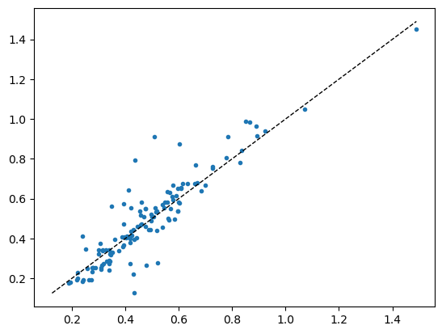
r2_score(val_targets, val_preds)0.8264008364793762On single images
def predict_with_transforms(learn, img_path, n_predictions=5):
# Load the image
img = PILImage.create(img_path)
# Create instances of the transforms
ratio_resize = RatioResize(224)
quantize = Quantize()
predictions = []
for _ in range(n_predictions):
# Apply transforms
img_resized = ratio_resize(img)
img_quantized = quantize(img_resized)
# Predict
pred, _, _ = learn.predict(img_quantized)
predictions.append(pred[0])
from statistics import mode
# Calculate mean and standard deviation
mean_pred = np.mean(predictions)
std_pred = np.std(predictions)
median_pred = np.median(predictions)
mode_pred = mode(predictions)
return mean_pred, std_pred, median_pred, mode_pred, predictionstest_df[['fname', df.columns[idx]]]| fname | soil_ex_K2O | |
|---|---|---|
| 217 | 859-2014-paddy_rice.png | 0.539629 |
| 163 | 278-2018-paddy_rice.png | 0.341865 |
| 243 | 968-2014-paddy_rice.png | 0.578465 |
| 467 | 2076-2018-paddy_rice.png | 0.338844 |
| 513 | 2123-2018-paddy_rice.png | 1.048431 |
| ... | ... | ... |
| 605 | 2419-2020-paddy_rice.png | 0.274818 |
| 352 | 1473-2014-paddy_rice.png | 0.407526 |
| 0 | 20-2013-paddy_rice.png | 0.317439 |
| 355 | 1477-2014-paddy_rice.png | 0.337330 |
| 424 | 2033-2018-buckwheat.png | 0.806339 |
127 rows × 2 columns
learn.predict('/Users/franckalbinet/pro/dev/uhina/_data/fk-jumpei-tfm/im/859-2014-paddy_rice.png')((0.5223042368888855,), tensor([0.5223]), tensor([0.5223]))def predict_with_tta_histogram(learn, img_path, n_tta=30):
# Load the image
img = PILImage.create(img_path)
# Create a test DataLoader with a single image
test_dl = learn.dls.test_dl([img])
# Collect predictions
all_preds = []
for _ in range(n_tta):
# Get prediction with TTA (n=1 for a single augmentation each time)
preds, _ = learn.tta(dl=test_dl, n=1)
all_preds.append(preds[0][0].item()) # Assuming single output
all_preds = np.array(all_preds)
# Calculate statistics
mean_pred = np.mean(all_preds)
std_pred = np.std(all_preds)
median_pred = np.median(all_preds)
min_pred = np.min(all_preds)
max_pred = np.max(all_preds)
return mean_pred, std_pred, median_pred, min_pred, max_pred, all_preds# Use the function
fname = '859-2014-paddy_rice.png'
img_path = Path('/Users/franckalbinet/pro/dev/uhina/_data/fk-jumpei-tfm/im/') / fname
mean, std, median, min_pred, max_pred, all_preds = predict_with_tta_histogram(learn, img_path, n_tta=30)
print(f"Min prediction: {min_pred:.4f}")
print(f"Max prediction: {max_pred:.4f}")
print(f"Mean prediction: {mean:.4f}")
print(f"Standard deviation: {std:.4f}")
print(f"Median prediction: {median:.4f}")
print(f"All predictions: {all_preds}")
# If you want to compare with the ground truth
print('Ground truth:', df[df.fname == fname][df.columns[idx]].values[0])
# Plot histogram
plt.hist(all_preds, bins=10)
plt.title('Histogram of TTA Predictions')
plt.xlabel('Predicted Value')
plt.ylabel('Frequency')
plt.show()Min prediction: 0.4531
Max prediction: 0.5795
Mean prediction: 0.5275
Standard deviation: 0.0282
Median prediction: 0.5272
All predictions: [0.54436386 0.55598998 0.56092638 0.57104981 0.52798319 0.57950228
0.50701064 0.52194297 0.51890564 0.53010362 0.50141889 0.53311121
0.51312613 0.53879243 0.50901508 0.51508129 0.54903734 0.51155448
0.53831923 0.50822324 0.52851534 0.57572448 0.51641762 0.51522946
0.45307761 0.52632904 0.53577548 0.56359959 0.51006508 0.46458086]
Ground truth: 0.5396292928049117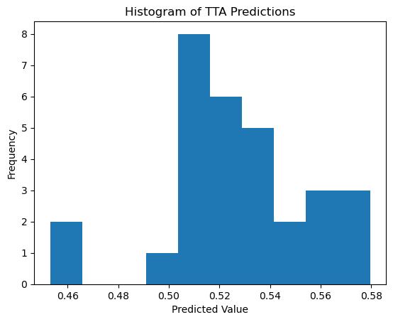
# Canonical fine-tuning
# from fastai.vision.all import *
# # Load the pretrained model
# learn = load_learner('./models/650-4000-epoch-25-lr-3e-3.pkl', cpu=False)
# # Prepare your new data
# path = 'path/to/your/data'
# dls = ImageDataLoaders.from_folder(path, valid_pct=0.2, item_tfms=Resize(224), batch_tfms=aug_transforms())
# # Set the new data
# learn.dls = dls
# # Fine-tune the head of the model
# learn.freeze()
# # alternatively: learn.freeze_to(n)
# learn.lr_find()
# learn.fit_one_cycle(5, 3e-3)
# # Fine-tune the entire model
# learn.unfreeze()
# learn.lr_find()
# learn.fit_one_cycle(5, slice(1e-5, 1e-3))# learn = vision_learner(dls, resnet18, pretrained=False, metrics=R2Score()).to_fp16()# learn.lr_find()# learn.lr_find()SuggestedLRs(valley=0.002511886414140463)
# learn.fit_one_cycle(5, 3e-3)Evaluation
# Convert predictions and targets to numpy arrays
def assess_model(val_preds, val_targets):
val_preds = val_preds.numpy().flatten()
val_targets = val_targets.numpy()
# Create a DataFrame with the results
results_df = pd.DataFrame({
'Predicted': val_preds,
'Actual': val_targets
})
# Display the first few rows of the results
print(results_df.head())
# Calculate and print the R2 score
from sklearn.metrics import r2_score
r2 = r2_score(val_targets, val_preds)
print(f"R2 Score on validation set: {r2:.4f}")dls.train.n69val_preds, val_targets = learn.get_preds(dl=dls.train)
assess_model(val_preds, val_targets) Predicted Actual
0 0.046272 0.210804
1 0.528189 0.976900
2 0.465372 0.469860
3 0.258100 0.338556
4 0.112802 0.147696
R2 Score on validation set: 0.7392val_preds, val_targets = learn.get_preds(dl=dls.train)
r2 = r2_score(val_targets, val_preds); r2r2 = r2_score(val_targets, val_preds); r20.7391959435205914scores = []
for n in range(1, 20):
val_preds, val_targets = learn.tta(dl=dls.train, n=n)
scores.append(r2_score(val_targets, val_preds))x = list(range(1, 20))
plt.plot(x, scores)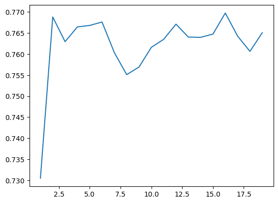
# EXAMPLE of TTA on single item
# from fastai.vision.all import *
# # Define your TTA transforms
# tta_tfms = [
# RandomResizedCrop(224, min_scale=0.5),
# Flip(),
# Rotate(degrees=(-15, 15)),
# Brightness(max_lighting=0.2),
# Contrast(max_lighting=0.2)
# ]
# # Create a pipeline of TTA transformations
# tta_pipeline = Pipeline(tta_tfms)
# # Load your model
# learn = load_learner('path/to/your/model.pkl')
# # Define the input data (e.g., an image)
# input_data = PILImage.create('path/to/your/image.jpg')
# # Apply TTA transforms to the input data and make predictions
# predictions = []
# for _ in range(5): # Apply 5 different augmentations
# augmented_data = tta_pipeline(input_data)
# prediction = learn.predict(augmented_data)
# predictions.append(prediction)
# # Average the predictions
# average_prediction = sum(predictions) / len(predictions)
# print(average_prediction)# Assuming you have a new CSV file for your test data
# test_source = '../../_data/ossl-tfm/ossl-tfm-test.csv'
# test_df = pd.read_csv(test_source)
# # Create a new DataLoader for the test data
# test_dl = learn.dls.test_dl(test_df)
# # Get predictions on the test set
# test_preds, test_targets = learn.get_preds(dl=test_dl)
# # Now you can use test_preds and test_targets for further analysisassess_model(val_preds, val_targets) Predicted Actual
0 0.312483 0.000000
1 0.126990 0.184960
2 0.365726 0.194201
3 0.239089 0.262364
4 0.402980 0.355799
R2 Score on validation set: 0.8325assess_model(val_preds_tta, val_targets_tta) Predicted Actual
0 0.246857 0.000000
1 0.148590 0.184960
2 0.371643 0.194201
3 0.226535 0.262364
4 0.407333 0.355799
R2 Score on validation set: 0.8378val_preds_np = val_preds
val_targets_np = val_targets
# Apply the transformation: exp(y) - 1
val_preds_transformed = np.exp(val_preds_np) - 1
val_targets_transformed = np.exp(val_targets_np) - 1
# Create a DataFrame with the results
results_df = pd.DataFrame({
'Predicted': val_preds_transformed,
'Actual': val_targets_transformed
})
# Display the first few rows of the results
print(results_df.head())
# Calculate and print the R2 score
from sklearn.metrics import r2_score
r2 = r2_score(val_targets_transformed, val_preds_transformed)
print(f"R2 Score on validation set (after transformation): {r2:.4f}")
# Calculate and print the MAPE, handling zero values
def mean_absolute_percentage_error(y_true, y_pred):
non_zero = (y_true != 0)
return np.mean(np.abs((y_true[non_zero] - y_pred[non_zero]) / y_true[non_zero])) * 100
mape = mean_absolute_percentage_error(val_targets_transformed, val_preds_transformed)
print(f"Mean Absolute Percentage Error (MAPE) on validation set: {mape:.2f}%")
# Calculate and print the MAE as an alternative metric
from sklearn.metrics import mean_absolute_error
mae = mean_absolute_error(val_targets_transformed, val_preds_transformed)
print(f"Mean Absolute Error (MAE) on validation set: {mae:.4f}") Predicted Actual
0 0.366814 0.00000
1 0.135405 0.20317
2 0.441560 0.21434
3 0.270092 0.30000
4 0.496277 0.42732
R2 Score on validation set (after transformation): 0.6936
Mean Absolute Percentage Error (MAPE) on validation set: 50.72%
Mean Absolute Error (MAE) on validation set: 0.1956plt.figure(figsize=(6, 6))
# Use logarithmic bins for the colormap
h = plt.hexbin(val_targets, val_preds, gridsize=65,
bins='log', cmap='Spectral_r', mincnt=1,
alpha=0.9)
# Get the actual min and max counts from the hexbin data
counts = h.get_array()
min_count = counts[counts > 0].min() # Minimum non-zero count
max_count = counts.max()
# Create a logarithmic colorbar
cb = plt.colorbar(h, label='Count in bin', shrink=0.73)
tick_locations = np.logspace(np.log10(min_count), np.log10(max_count), 5)
cb.set_ticks(tick_locations)
cb.set_ticklabels([f'{int(x)}' for x in tick_locations])
# Add the diagonal line
min_val = min(val_targets.min(), val_preds.min())
max_val = max(val_targets.max(), val_preds.max())
plt.plot([min_val, max_val], [min_val, max_val], 'k--', lw=1)
# Set labels and title
plt.xlabel('Actual Values')
plt.ylabel('Predicted Values')
plt.title('Predicted vs Actual Values (Hexbin with Log Scale)')
# Add grid lines
plt.grid(True, linestyle='--', alpha=0.65)
# Set the same limits for both axes
plt.xlim(min_val, max_val)
plt.ylim(min_val, max_val)
# Make the plot square
plt.gca().set_aspect('equal', adjustable='box')
plt.tight_layout()
plt.show()
# Print the range of counts in the hexbins
print(f"Min non-zero count in hexbins: {min_count}")
print(f"Max count in hexbins: {max_count}")
Min non-zero count in hexbins: 1.0
Max count in hexbins: 157.0path_model = Path('./models')
learn.export(path_model / '0.pkl')Inference
ossl_source = Path('../../_data/ossl-tfm/img')
learn.predict(ossl_source / '0a0a0c647671fd3030cc13ba5432eb88.png')((0.5229991674423218,), tensor([0.5230]), tensor([0.5230]))df[df['fname'] == '0a0a0c647671fd3030cc13ba5432eb88.png']| fname | kex | |
|---|---|---|
| 28867 | 0a0a0c647671fd3030cc13ba5432eb88.png | 0.525379 |